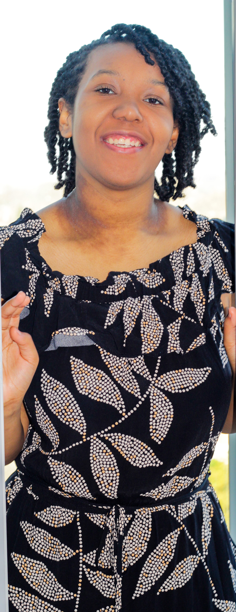
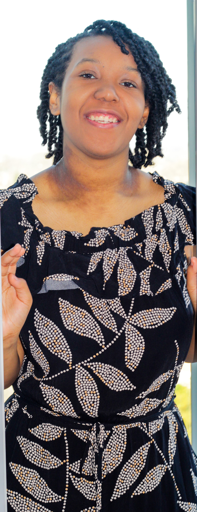

Relevance — D‑1 (Lead Vocal by Marisa)
Original music video created in a Sony Music Project with Dee Digital. Marisa was the lead vocalist and only singer in the group D‑1. The song was made under time pressure in 4 hours.
Singer-songwriter, podcaster, performer & entrepreneur. Check out my socials below.
Original music video created in a Sony Music Project with Dee Digital. Marisa was the lead vocalist and only singer in the group D‑1. The song was made under time pressure in 4 hours.
Music Video / Documentary style project — a collection of songs written, produced and performed by Marisa (co‑lyricist Nathan Brown‑Bennett). Marisa handled lighting, filming, directing, planning, set design, video editing, recording and producing in 5 days.
Interviews hosted and directed by Marisa and the music video ‘Relevance’ are featured on the DeeDigital Music channel.
This podcast is about giving people a platform to voice their opinions on mental health, race, problems going on in the world, and projects they are working on. The aim is to give people a voice and motivate listeners to know that their thoughts are valid and that they can make a difference in the world. Check out this interview recorded for KURadio.
This podcast discusses violence in drill music and how it influences youth today. Marisa interviewed fellow artists from D‑1 to talk about how their song ‘Relevance’ spreads a positive message.


 



Marisa has been an advocate with Barnardo’s, contributing to their Wellbeing Hubs and Young Carers initiatives, and writing for Believe Magazine.
Invited to tea at Clarence House with Barnardo’s young carers; coverage included HELLO! Magazine and official posts by Barnardo’s and Marisa.
Featured across radio and press when Billie Eilish surprised Marisa on Capital FM; covered by Capital FM, Business Insider, the Evening Standard, and others.
Belfast Telegraph (PA wire): Health reforms ‘could leave more children caring…’ — lists “Marisa Olusemo, 18 (Barnardo’s)” among interviewees.
Instagram performance/collab tags featuring @marisao (incl. Croydonites Festival context).
Contact Me